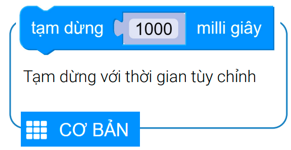
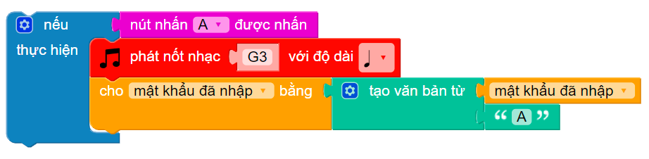

10. Bài 7: Khóa cửa thông minh
Mục tiêu
Trong bài học này, chúng ta sẽ cùng làm một kháo cửa thông minh bằng mật mã cho mô hình Smart Home nhé. Bạn sẽ dùng nút A và B trên Yolo:Bit để nhập mật khẩu, nếu đúng thì cửa sẽ mở, nếu sai thì Smart Home sẽ thông báo sai mật khẩu để nhập lại.
Thiết bị cần dùng
Màn hình LCD
{kind=link}
Động cơ Servo
{kind=link}
Kết nối
Kết nối màn hình LCD vào cổng l2C 1
Kết nối Servo vào chân P6
{kind=link}
Giới thiệu về động cơ Servo
Servo là một dạng động cơ điện đặc biệt, chỉ quay khi được điều khiển (bằng tín hiệu xung) với góc quay nằm trong khảong bất kỳ từ 0 - 180 độ.
Giới thiệu khối lệnh

{kind=link}
{kind=link}
{kind=link}
{kind=link}
Viết chương trình
Tạo 2 biến: mật khẩu cài đặt (Mật khẩu đúng để mở cửa) và mật khẩu đã nhập (Mật khẩu khi nhập vào)
Gán giá trị AABB cho mật khẩu cài đặt và gán giá trị rỗng cho mật khẩu đã nhập
{kind=link}
Khi nút A được nhấn, phát ra một nốt nhạc và thêm 1 kí tự A vào chuỗi mật khẩu đã nhập trước đó
Ví dụ: nếu bạn đã nhâkp AAB trước đó, sau khi nhấn A lần nữa, mật khẩu đã nhập sẽ là AABA
{kind=link}
Xóa màn hình LCD trước đó và hiển thị mật khẩu đã nhập lên màn hình LCD trong vòng 300 ms (0.3 giây)
{kind=link}
Tương tự, nếu nút B được nhấn thì Yolo:Bit sẽ phát nốt nhạc G3 để báo hiệu, đồng thời lưu thông tin vào mật khẩu đã nhập và hiển thị chúng ra màn hình LCD trong 300 ms:
{kind=link}
Kiểm tra độ dài của mật khẩu đã nhập đủ 4 ký tự chưa. Nếu đủ thì xóa màn hình LCD
{kind=link}
Nếu mật khẩu đúng (mật khẩu đã nhập bằng mật khẩu cài đặt) thì LCD hiển thị dòng “Xin moi vao” và phát bài nhạc POWER_UP, đồng thời quay Servo mở cửa trong 3 giây, sau đó đóng cửa và tắt Servo (Bạn nhớ đổi cổng của Servo thành cổng P6):
{kind=link}
Nếu mật khẩu sai, màn hình LCD hiển thị “Sai mật khẩu” và phát bài nhạc POWER_DOWN, đồng thời xóa mật khẩu đã nhập tại cuối chương trình (Cho biến mật khẩu đã nhập bằng giá trị rỗng)
{kind=link}
Chương trình trong lặp lại mãi như sau:
{kind=link}
Chương trình mẫu
Khóa cửa thông minh: Tại đây
{kind=link}